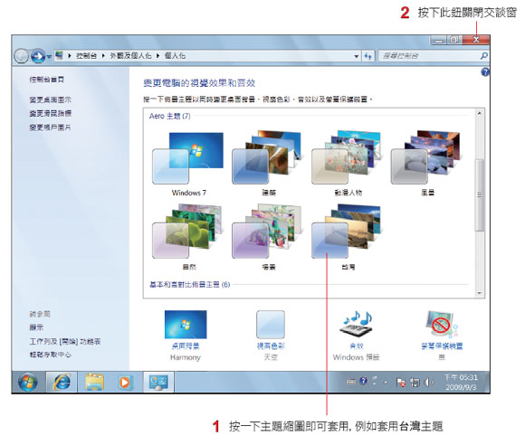
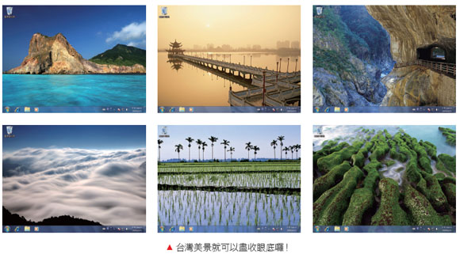
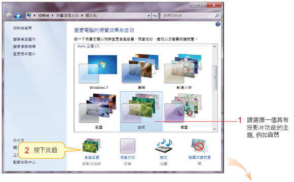
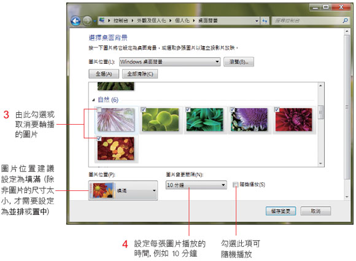

作者：施威銘研究室著
書號：F9103
附件：無附光碟片
定價：299 元
Windows 7 提供了多個現成的佈景主題, 有風景、動漫人物、建築...等, 還提供各 地區專屬的佈景主題, 例如繁體中文版的 Windows 7 中, 就會有台灣這個佈景主題。請 在桌面上按右鈕執行『個人化』命令, 我們先來試試現成的佈景主題：

Windows 7 的佈景主題大致可分成兩個類別, 分別是單張桌面背景的佈景主題, 與 多張桌面背景的佈景主題, 由圖示可以清楚分辨兩者：
兩者的差異在於套用多張桌面背景的佈景主題時, 桌面背景將會在一段時間 (依設定 而異) 後輪播其它圖片, 如同投影片的播放效果一樣；套用單張桌面背景的主題時則不會 有投影片效果。例如套用了台灣主題後, 桌面將會輪番播放以下的 6 張圖片：

套用具投影片放映功能的主題後, 可在桌面上按右鈕執行『下一個桌面背景』命令, 立即切換到 下一張圖片。
桌面背景的投影片果然精彩！但是每張圖片播放的時間太久了、想要跳過幾張不喜 歡的相片, 還有幾張其它主題的圖片也想加進輪播的行列...等, 以下再來談談這些與投影 片功能有關的設定。請在桌面上按右鈕執行『個人化』命令, 再如下操作：


設定好之後請按下儲存變更鈕, 再關閉個人化視窗, 就可以在桌面欣賞到多張漂亮的 圖片了。